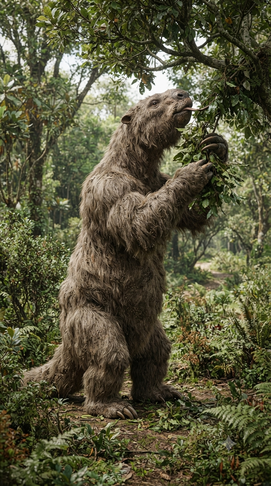
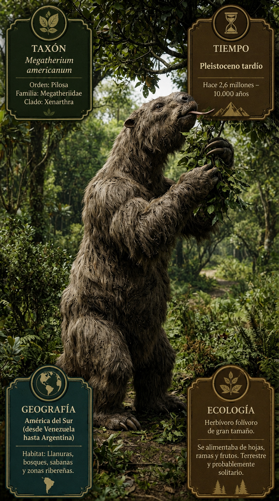
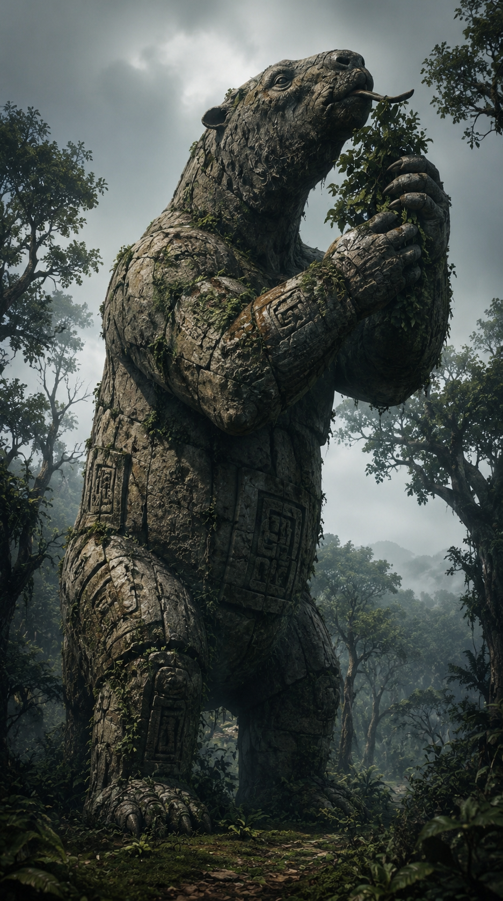

Paleoficha de PalEntropía



TAXÓN:
Megatherium americanum
CLADO:
Pilosa (Folivora, Megatheriidae)
DIETA:
Herbívoro (ramoneador de altura especializado en hojas, ramas y vegetación leñosa)
TAMAÑO:
Hasta 6 metros de longitud y alrededor de 4 toneladas de masa corporal.
LOCOMOCIÓN:
Terrestre graviportal; extremidades robustas y poderosas garras anteriores utilizadas para atraer ramas y defenderse. Era capaz de incorporarse temporalmente sobre las patas traseras utilizando la cola como tercer punto de apoyo.
TIEMPO:
Pleistoceno Medio–Superior hasta el Holoceno temprano (aprox. 0,8 Ma – 10 ka)
GEOGRAFÍA:
Sudamérica, especialmente Argentina, Bolivia, Uruguay y regiones vecinas.
EQUIVALENCIA PALEOGEOGRÁFICA:
Praderas abiertas, sabanas arboladas, llanuras aluviales y márgenes de bosques.
AMBIENTE PALEAOECOLÓGICO:
Ecosistemas abiertos y semiabiertos con abundante vegetación leñosa y recursos vegetales estacionales.
ECOLOGÍA:
• Flora: Árboles, arbustos, angiospermas leñosas y extensas praderas herbáceas.
• Fauna secundaria: Compartía su entorno con Glyptodon, Toxodon, Macrauchenia, Smilodon y otros grandes mamíferos pleistocenos.
• Nichos: Gran ramoneador. Sus enormes garras le permitían atraer ramas hacia la boca mientras se sostenía parcialmente erguido, alcanzando vegetación inaccesible para otros herbívoros. Su dentición de crecimiento continuo estaba especializada en triturar material vegetal fibroso.
• Relaciones: Máximo representante de los perezosos terrestres gigantes. Constituye uno de los ejemplos más espectaculares del gigantismo alcanzado por los mamíferos sudamericanos durante el Pleistoceno.
CLIMA:
Wm30 (Pleistoceno templado-frío). Alternancia de periodos glaciales e interglaciales que modificaban la extensión de praderas, sabanas arboladas y bosques abiertos de Sudamérica, condicionando la distribución de la megafauna.
ESTADO ECOLÓGICO:
Extinto. Uno de los mayores herbívoros terrestres del Pleistoceno sudamericano y el máximo representante evolutivo de los perezosos gigantes. Su desaparición al inicio del Holoceno estuvo probablemente relacionada con la combinación del cambio climático y la expansión de las poblaciones humanas.